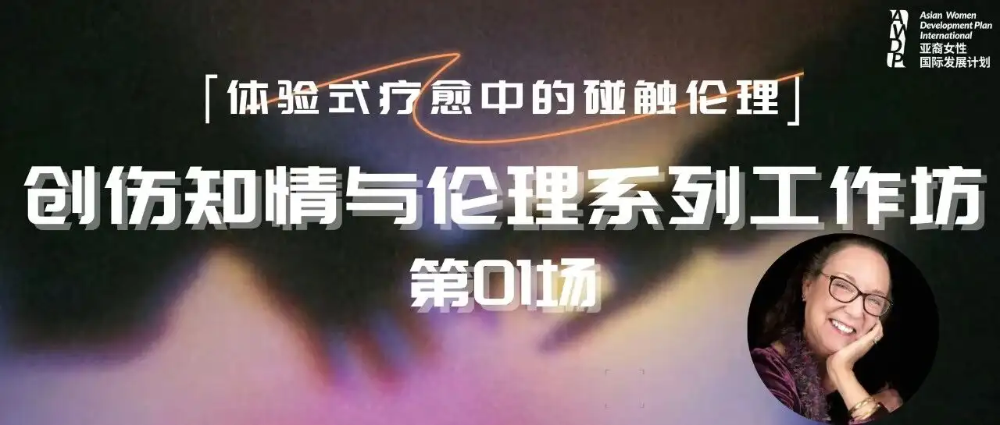
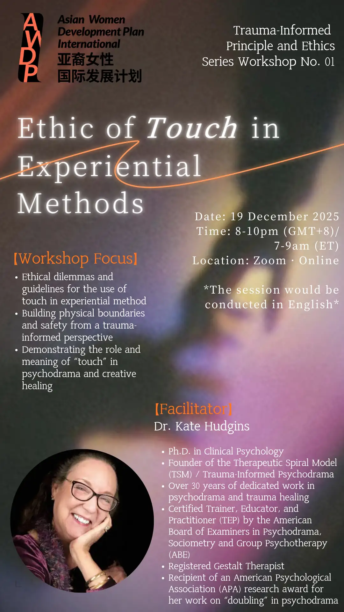
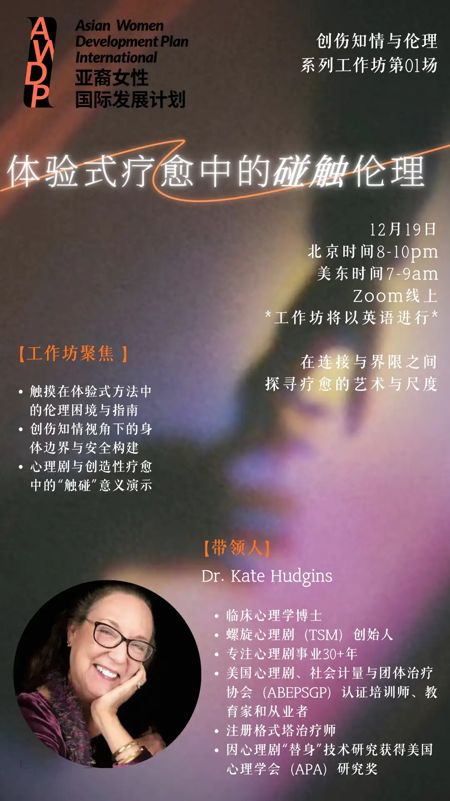

创伤知情与伦理系列思享会介绍
（向上滑动启阅）
创伤知情与伦理系列思享会由AWDPI课程研发处与心理支持处共同发起，意在聚焦在创伤的多重形态，尤其是亲密关系暴力、家庭暴力、性别暴力等经验中所引发的深层创伤，以及这些创伤如何交织于童年记忆、社会结构与权力关系中。 思享会将特别探讨在行动与陪伴中，助人者应如何带着创伤知情的伦理意识进行回应与实践。目标受众包括助人者（ADWPI全体志愿者、社工、心理咨询师、法律工作者等）、相关学者与学生、行动者与倡导者、当事人及任何对本主题感兴趣的社会人士。
发起这次思享会的初衷，源于我们意识到在组织内部、乃至更广泛的助人实践领域中，“创伤知情”仍是一块相对缺乏关注的空白地带，即使是在讨论其较多的部分领域，也更多是作为一个buzzword而缺乏系统性的培训和实践。我们深感这是一个亟需被正视、讨论、学习和实践的议题， 它不仅关乎专业性与伦理意识的提升，更关乎如何在人与人之间建立起一种更持续、负责任的人文关怀关系。无论是对助人者还是被帮助者而言，我们都希望能在这场思享会中，打开一条通往彼此理解、支持与回应的路径。
本系列将以工作坊、讲座、圆桌等多样线上形式、多领域与学科视野，为创伤知情与伦理提供尽可能丰富的讨论，整体时间预计从2025年12月起，整体运行半年。如您有推荐的相关人选，或是想要毛遂自荐，欢迎划动至文末，添加我们的女性小助手给她留言。
期待在活动中见到您。
AWDPI课程研发处与心理支持处
敬上
第一场活动将以线上工作坊的形式进行，我们非常荣幸地邀请到了Kate Hudgins 博士，螺旋心理剧的创始人为我们带来如此珍贵的机会。以下是本次活动的中英文介绍。
Introduction of Our Facilitator

Dr. Kate Hudgins
Ph.D. in Clinical Psychology
Founder of the Therapeutic Spiral Model (TSM) / Trauma-Informed Psychodrama
Over 30 years of dedicated work in psychodrama and trauma healing
Certified Trainer, Educator, and Practitioner (TEP) by the American Board of Examiners in Psychodrama, Sociometry and Group Psychotherapy (ABE)
Registered Gestalt Therapist
Recipient of an American Psychological Association (APA) research award for her work on “doubling” in psychodrama
Workshop Topic: The Ethics of Touch
When physical involvement plays a significant role in experiential therapies, such as psychodrama and art-based healing, where touch is an integral component, where do we draw the line between touch and non-touch? When is touch genuinely therapeutic? Can it cause harm unintentionally? In what ways can we establish an ethical framework that protects clients as well as practitioners?
Workshop Highlights
Get a first-hand understanding of the original Therapeutic Spiral Model (TSM) and Trauma-Informed Psychodrama approach from the founder.
Participate in live demonstrations and interactive sessions to gain a deeper understanding of its theoretical foundations and historical background.
Address the "grey areas" and uncertainties surrounding physical contact in the helping professions.
This workshop will explore
the following topics:
A demonstration of the role and meaning of touch in psychodrama and creative healing will be provided.
A trauma-informed approach to establishing physical boundaries and fostering a sense of safety.
Dialogue regarding ethical dilemmas related to the use of touch in experiential practices.
Workshop Details
Date & Time:
December 19, 2025 8:00–10:00 PM Beijing Time / 7:00–9:00 AM Eastern Time
Format:
Interactive Zoom workshop
The Workshop will be conducted in English.
Registration Form:
Scan the Code
Or Click “Read More”
at the end of the article to sign up
以下为中文介绍
嘉宾介绍

Kate Hudgins 博士
治疗性螺旋模型（TSM）心理剧创始人；
美国心理剧、社会计量与团体治疗协会（ABEPSGP） 认证训练师（TEP）、教育家和从业者；注册格式塔治疗师。
1986年获临床心理学博士学位，研究专注于心理剧，因心理剧 “替身”技术研究获得美国心理学会（APA）研究奖。
工作坊主题：碰触的伦理
在心理剧、艺术疗愈等需要身体参与的体验式疗法中，碰触的边界在哪里？
什么时候的碰触是治疗性的，什么时候可能变成伤害？
如何建立清晰的伦理框架，既保护来访者，也保护治疗师？
工作坊亮点
跟着创始人了解原汁原味的治疗性螺旋模型（螺旋心理剧）方法；
在分享历史背景、理论知识的同时，通过演示和互动带领参与者体验其方法；
直面助人工作中关于身体接触的那些“灰色地带”和困惑。
工作坊聚焦
心理剧与创造性疗愈中的“碰触”意义演示；
创伤知情视角下的身体边界与安全构建；
触摸在体验式方法中的伦理困境与讨论。
工作坊详情
时间：
2025年12月19日 北京时间晚8点-10点/美东时间早7点-9点
形式：
Zoom 线上互动工作坊
本次费用全免，需保证能够全程参与
*工作坊将以英语进行*
报名表单：
扫描上方二维码
或者点击文章结尾“阅读原文”
即可进入会议
（中国大陆区用户使用Zoom会议，可直接以游客身份进入app，保持不登录的状态，即可顺利加入会议）
撰稿｜乔乔
海报｜乔乔
排版&封面｜池一诺